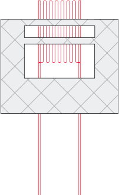

<div class="mainIntro">
  <div class="mainIntro__container container">
    <div class="mainIntro__img">
      
    </div>
    <div class="mainIntro__text">
      <p class="mainIntro__title">Who we are</p>
      <div class="mainIntro__desc">
        <p>HPM is a Ukrainian developer, producer and supplier of the specialized strain gages and accessories dedicated for tensile strength measurements at elevated and high temperature conditions. Our company produces wire strain gages for -269…+1150°C operating temperature range.</p>
        <p>Engineering team of our company comprises specialists in metrology, strength of materials and mechanical values measuring units. The core of our engineering team are specialists having years of practical experience of measurements and field tests at Motor-Sich factory. This particular experience helps us understand the acute needs of our customers. The motto of our company is our employees’ sincere interest in scientific research and engineering, desire for constant perfection of our products.</p>
        <p>HPM for many years has been an official representative of ZEMIC company for strain gages and accessories for measurements at elevated temperatures. Over these years we developed many special solutions for our customers, which allow to increase speed and comfort of the strain gage application and also increase precision of measurements.</p>
      </div>
    </div>
  </div>
</div>
